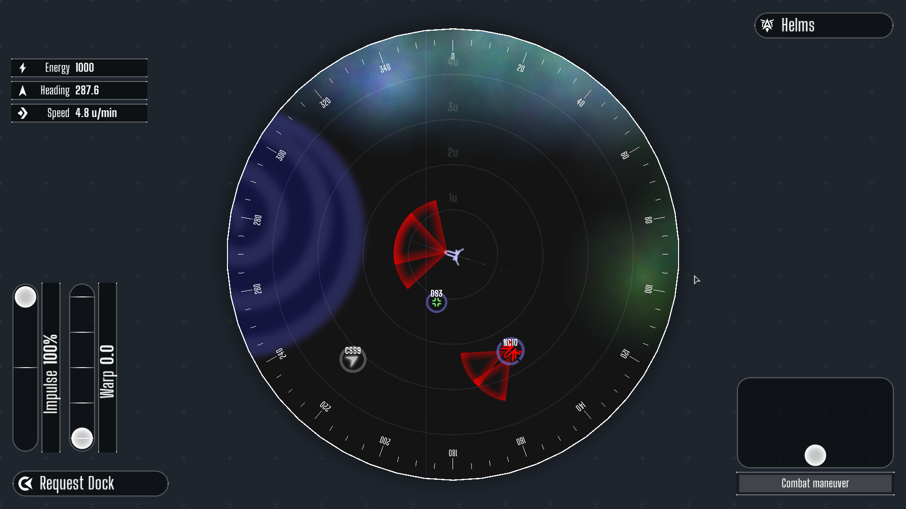
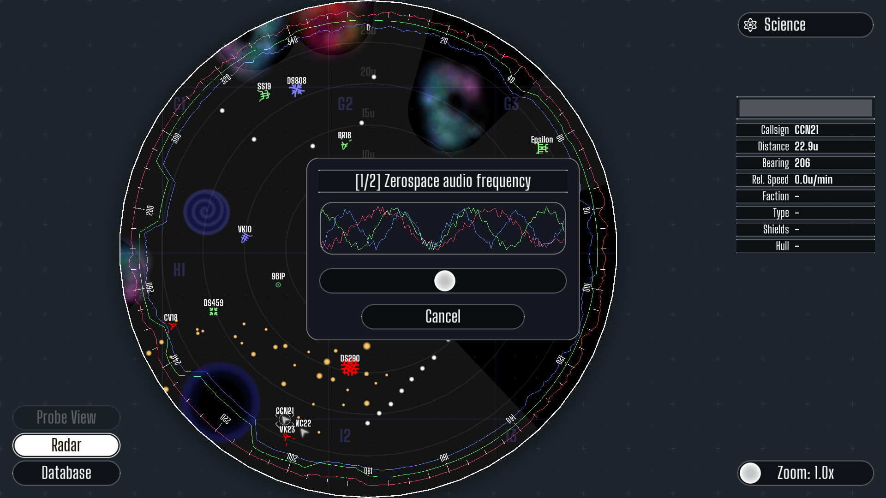

What is it?
EmptyEpsilon is a space ship bridge simulator game. It's fully open source, so it can be modified in any way people wish.What does this mean?
EmptyEpsilon allows you to play a space ship bridge. Like seen in Star Trek. In order to play, you will need at least four people, but the best experience is with 6. Each person will have their own role; Captain, Helms, Tactical, Relay, Science and engineering. The captain however, does not have a screen, nor can he press any buttons (save for switching the main screen). The captain will need to rely on their trusty crew to follow his/her orders.Artemis Spaceship Bridge Simulator?
Artemis Spaceship Bridge Simulator was the inspiration for EmptyEpsilon. It's pretty good as a bridge simulator.But we had some issues with it, which we decided to fix. As spaceship artemis isn't open source, our only solution was to start over by ourselves. For example, the "comms" station of Artemis is pretty limited causing that station to be boring for the player. There where also issues with the game desyncing, causing confusion among the players. Also the GameMaster screen pretty much did not what we wanted to see in a GameMaster screen.So, all in all, artemis is a nice game, but we wrote our own due to lack of features.
Contact
The best place to talk about bridge simulation and EmptyEpsilon is the The Starship Bridge Simulation Network. We regulary check this and post updates / battle logs of our space adventures.
Main developers of EmptyEpsilon go by the names of Daid and Nallath
Donations
EmptyEpsilon is a 100% free game. We made this because we wanted to play the game we envisioned for ourselves. But we are not artists, so we need to buy the 3D models used in this game.
Currently we are raising money to buy more frigates models
Previous contributions
Thanks to generous contribution of Serge Wroclawski we managed to buy: more battleship models
Thanks to contributions of MadKat and Daid we managed to buy: larger 3D station models

Main screen view from a cruiser near a station being attacked by two enemy cruisers.

View on the helms officers screen. Controls the movement of the ship.

View on the helms weapons screen. Controls the weapons and shields of the ship.

View on the engineering screen. Can boost different subsystems and repair systems.

View on the science officers screen. Has long range scanners and a large database of information

View on the relay officers screen. Can see friendly ships and what's in the short range radar range of friendly ships. Can call ships and stations for different requests.
To run EmptyEpsilon you need the following equipment:
- 4-6 computers, depending on the number of players (laptops or desktops)
- One big screen (large monitor, tv or beamer)
- A stable network (wifi can work, but cabled network is prefered)
Designate a single player as Captain. His computer can be used as main screen, and his only job is to talk with the other players and tell them what they should do.
The other 5 players each man a different station. The description on what each station can (and should) do can be found at station tabs.
Running the game
After starting the game the computer selected for the main screen can best be the server. The other stations should connect as clients. After starting a server, and selecting a scenario (we recommend the "Waves" or "Basic" scenario for first games) you should spawn a player ship for everyone to join. Everyone should select the ship, choose their designated station. And you're off. Easy as pie.
If you don't have enough players (or stations) it's possible to run multiple stations on a single machine. This can be done by pressing multiple roles in the ship selection menu. Switching between stations can be done by pressing the corresponding button in the top of the game screen.
There is also the option to run with a 4/3 player crew setup. Where you have only 3 stations. Called Tactical, Engineering+ and Operations.
Tactical combines helms and weapons into one station.
Engineering+ takes shields activation from the weapon station.
Operations Acts the same as science, but allows for communications as well.
These 3 extra setups can be combined with the normal 5 stations
TODO (You can make EmptyEpsilon auto connect to any available server on the network, and selecting a station instantly. Lowering setup time)
TODO (You have access to a GM screen on the server, which gives you a lot of control on the game, allowing tweaks while the game is playing, making for an more intresting game)
The captain has zero direct control of the ship. However, he is tasked with keeping the whole crew together and making tactical decisions. The main screen should be setup on a large monitor or beamer so it is visible for all the players.
The captains tasks include (but are not limited to):
- Planning the next actions
- Co-ordinating combat tactics
- Preventing mutiny
- Setting priorities
Controls:
Note that these controls are optional, and do not have to be used to play the game, but could be used in custom hardware setups. These controls are only for the main screen.
- Left mouse button: Rotate the main screen 90deg to the left
- Right mouse button: Rotate the main screen 90deg to the right
- Middle mouse button: Switch between ship, radar and long range radar view
- Up key: Set mainscreen view to forward view
- Down key: Set mainscreen view to rear view
- Left key: Set mainscreen view to left view
- Right key: Set mainscreen view to right view
- Tab key: Set mainscreen view to short range radar view
- Q key: Set mainscreen view to long range radar view
Notes
There are a lot of ways to setup the mainscreen and captain role. You can designate a single station to give control of the main screen. But you can also give the captain direct control of the main screen with the above controls.
A simple "custom" hardware setup for the captain would be using tape to attach a 3 button mouse to an armchair.
In the left upper corner you can see the energy (max is 1000), the current heading in degrees and the current speed. Below this data are two sliders; The leftmost slider sets the impulse power from -100% to 100%. The slider next to it sets the jump distance.
Jumping The jump button allowes the ship to jump the set distance in it's current heading. Note that the further you jump, the higher the energy cost. Depending on how much power the system has (and how damaged it is) the time to power the jump might increase/decrease.
Docking Docking can be done when the ship is within 1 km of a friendly station by pressing the dock button.
Targeting In order to fire, an enemy ship needs to be targeted. This is done by clicking the desired ship.
Missiles Missiles are one of the most destructive weapons of a space ship. Before they can be fired, they need to be loaded in a missile tube. Loadeding missiles wil take time. Unloading missiles can be done by pressing the unload button next to a loaded missile tube. Firing a missile can be done by pressing a loaded missile tube. Take care to have an enemy selected! If there is no enemy, the missile wil be dumb fired (flying in a straight line).
Beam weapons The location & range of beam weapons are indicated by the red firing arcs. Once a target is selected, the beam weapons will auto fire. The frequency can be set on the right of the screen. Some frequencies will deal more damage to certain shield frequencies. Rely on your science officer to provide you with such data. Note that changing the frequencies does not take time. Beam weapons can also target selective subsystems. If you simply wish to destroy an enemy, it's best left on hull.
Shields Shields can be activated (and deactivated) by pressing the shield button. It might seem tempting to keep the shields up at all time, but they drain significantly more power when they are active.
Power management The engineer can re-route power from one system to another. This can be done by selecting the system and moving the power slider. Giving a system more power will increase it's output (Generator; More energy per second, Shield; more damage reduction / reload, Impulse; faster movement, etc).
Coolant Increasing the energy that is sent to systems will heat up the systems. By giving a system more coolant, more heat can be transported from the system. There is a finite amount of coolant. The trend of the temperature is shown with a white arrow. The brighter it is, the larger the trend (either up or down, as indicated by the direction of the arrow).
Repair It can happen that certain systems get damaged, either by being shot or due to overheating. Systems have a state of -100% to 100%. Once a system is at or below 0% it will no longer function. Systems below 100% will function sub optimal (in much the same way if they are under powered). Systems can be repaired by sending a repair crew to it. Repair crews automatically repair all systems in the room they are in.
Calibration Engineering can also calibrate shields. This is done by selecting a frequency and pressing the calibrate button. Note that this takes time, during which the shields are offline. They will not automatically turn on once the shields are recalibrated.
Long range radar The science station has a long range radar, which is vital to spot ships comming in from a distance. Reporting how the current sector looks and how it changes is your most important task.
Scanning You can scan ships to get more information about them. Most ships will be unknown (gray) at the start. And need to be scanned to know if they are friend or foe.
More scanning Scanning a target twice yields more information. You can see what shield and beam frequencies should be used to engrage this target. A second scan will also provide the helms and weapons screen with information about beamweapons, allowing you to avoid being shot by their beams.
Nebulas Nebulas block your long range scanners. Be sure to relay information about where you can see things, and where not, to both the captain and the relay officer.
Database The science station is equiped with a database of all known ships, as well as weapon and other information. Use this information to your advantage.
Communications the relay station can open communications to stations and other ships. This can be used for varius tasks, including asking for backup, sending orders to friendly ships. Or asking for re-supplies when docked.
Short range sensors you can see what the short range sensors (5km) see around your ship. But also around other friendly ships. Giving you the ability to spot things before the science station does. You however, cannot scan ships.
Probes you can send out up to 10 probes. These probes will fly towards a location and stay there for 10 minutes. Every probe will give you a 5km addition sensor area. Probes will work inside nebulas and thus are a powerful tool when faced with an area blocked by nebula.
About this series
This series of scripting documentation will document the steps taken to develop the EmptyEpsilon mission Beacon of light
The world scenario and mission are used freely troughout this series. EmptyEpsilon has scripted scenarios, which can be less or more complex. We will be focusing here on building a mission.
This mission will start out with a fixed set of instructions for the player to follow. And will provide them with challanges to overcome.
The scenario scripting system can be used for more complex setups. But this won't be done in this series. Look at the "Waves" scenario for a different setup.
These series will start of easy, with very little to no programming knowledge required. But will go into more advanced topics later on.
Tools
For scenario/mission development you need a basic text editor. While windows notepad can work, I highly recommend something more advanced.
There are various options:
- Programmers notepad (windows)
- Sublime text (windows, mac, linux)
- Nodepad++ (windows)
And there are many more. I personally use Programmers notepad. But any of these editors will do.
Download and install the editor of your choice.
Setting up the file
We'll start out with an empty scenario, as a template to setup our initial game in step 1.
Open the editor of your choise, and enter the following code:
-- Name: Beacon of light series -- Description: The beacon of light scenario, build from the series at EmptyEpsilon.org -- Init is run when the scenario is started. Create your initial function init() -- Create the main ship for the players. PlayerSpaceship():setFaction("Human Navy"):setShipTemplate("Player Cruiser") end function update(delta) end
Save this as a file named scenario_99_tutorial.lua in the folder EmptyEpsilon/scripts
Open EmptyEpsilon and start a new server. Your scenario should be at the bottom of the list. Start it, and you will notice that there is a ship for the players created per default.
Tips&tricks
The file needs to start with scenario_ to be picked up as a scenario.
The number in the scenario filename is for the order in which EmptyEpsilon shows the scenarios.
The final part of the filename is only for reference. The actual name shown is in the first line of the script file.
Lines starting with a double dash -- are comment lines in the scenario script. They do not do anything while playing, but are for your own reference so you know what the code does.
To quickly view how the scenario looks, you can use the GameMaster screen, this allows you to view the whole game world with ease.
EmptyEpsilon scenarios are build in lua scripting. For a full reference of the lua language see http://www.lua.org/.
Building a world?
Now that you have setup a basic script and know how to save and run it. Let us populate the world a bit more.
We'll first fill it with some stations, and then add some nebulae and asteroids.
Building a world - Stations
Right now the only thing in the world is the ship for the players. Which does not make for an intresting world.
So let's add some stations. Add the following code after the creation of the player ship:
SpaceStation():setTemplate("Small Station"):setFaction("Human Navy"):setPosition(23500, 16100) SpaceStation():setTemplate("Medium Station"):setFaction("Human Navy"):setPosition(-25200, 32200) SpaceStation():setTemplate("Large Station"):setFaction("Kraylor"):setPosition(-45600, -15800) SpaceStation():setTemplate("Small Station"):setFaction("Independent"):setPosition(9100,-35400)
This places a friendly small station at 23k,16k. Which is in sector F6. Another friendly station in sector G3. A large enemy Kralor station in sector E2. And a small neutral station at sector D5.
Each sector is 20x20km. And sector F5 starts at 0,0. Look at this image for more details.
{kind=link}
Now, we want the player to start a bit closer to the small friendly station. So we set the player position near the small station.
PlayerSpaceship():setFaction("Human Navy"):setShipTemplate("Player Cruiser"):setPosition(22400, 16200)
Building more world - Nebulae
Nebulae are intresting to add to the game world. As they block of a 5km range of the long range radar. And add more mistery to the whole world.
They provide an intresting tactical difference to the game. As computer controlled ships are also blocked by Nebulae.
So we surround the enemy station by some nebula, so it's shielded from direct sight.
--Nebula that hide the enemy station. Nebula():setPosition(-43300, 2200) Nebula():setPosition(-34000, -700) Nebula():setPosition(-32000,-10000) Nebula():setPosition(-24000,-14300) Nebula():setPosition(-28600,-21900)
But a cloud of nebulae like that clearly hides something, so add a few random nebulae as well.
--Random nebulae in the system Nebula():setPosition( -8000,-38300) Nebula():setPosition( 24000,-30700) Nebula():setPosition( 42300, 3100) Nebula():setPosition( 49200, 10700) Nebula():setPosition( 3750, 31250) Nebula():setPosition(-39500, 18700)
Building more world - Asteroids
Asteroids can be placed in the same way as Nebula and stations.
Astroid():setPosition(-1000, -1000)
However, because you usually want 50 or even 100 asteroids. Placing the position by hand will be a hell do to.
So we can use more lua programming functions to do this.
--Place a single random asteroid in sector E5: Asteroid():setPosition(random(0, 20000), random(-20000, 0))
So that is a single astroid. Which does not really feel like an astroid field.
--Create 100 Asteroids for asteroid_counter=1,100 do Asteroid():setPosition(random(0, 20000), random(-20000, 0)) end
Surrounding it in a simple for loop however, will generate a 100 random Asteroids.
Which... results in a pretty square asteroid field. Not that pretty.
So right now, we just tweak the parameters to have an field from sector E4 to G4 in a straight line.
--Create 50 Asteroids for asteroid_counter=1,50 do Asteroid():setPosition(random(-10000, -5000), random(-10000, 30000)) end
Already a whole lot better. But when you look at it in the 3D view now, it does look very flat. To fix that we add some VisualAsteroids as well. These asteroids are above or below the ship flying plane and cannot be hit. They are just there for visuals.
--Create 100 Asteroids for asteroid_counter=1,50 do Asteroid():setPosition(random(-10000, -5000), random(-10000, 30000)) VisualAsteroid():setPosition(random(-10000, -5000), random(-10000, 30000)) end
Spice it up a bit
Right now the stations are just called DS-7, and other DS-? numbers. But we can change this.
By calling the setCallSign function on the stations, we can set a different name for them. Be sure to keep this short.
SpaceStation():setTemplate("Small Station"):setFaction("Human Navy"):setPosition(23500, 16100):setCallSign("Research-1") SpaceStation():setTemplate("Medium Station"):setFaction("Human Navy"):setPosition(-25200, 32200):setCallSign("Orion-5") SpaceStation():setTemplate("Large Station"):setFaction("Kraylor"):setPosition(-45600, -15800):setCallSign("Omega") SpaceStation():setTemplate("Small Station"):setFaction("Independent"):setPosition(9100,-35400):setCallSign("Refugee-X")
We call the small station a research station, which gives it a bit more character. The enemy station is called Omega, as it's big. And the neutral station is called Refugee-X, which makes it sound like it could be housing refugees.
A few simple names can give the whole world more character.
Finally we call the player ship TheEpsilon
PlayerSpaceship():setFaction("Human Navy"):setShipTemplate("Player Cruiser"):setPosition(22400, 18200):setCallSign("TheEpsilon")
Tips&tricks - Building even more world?
Next to asteroids, stations and nebulae there are a few more options to populate your world.
While we do not use anything else at this point in time. The following objects can also be created:
BlackHole() -- Create a black hole, a 5km radius black hole which destroys anything that comes into the center. Mine() -- A simple mine. Explodes with a 1km radius when a ship comes too close. WarpJammer():setFaction("Kraylor") -- A warp jammer, jams warp and jump drives in a 5km radius. Can be destroyed. SupplyDrop():setFaction("Human Navy") -- A supply drop, can be picked up by flying over it, empty per default, can be filled with energy and missile weapons.
Final script for today.
We end off with the complete script for reference.
-- Name: Beacon of light - Day 1 -- Description: The beacon of light scenario, build from the series at EmptyEpsilon.org -- Init is run when the scenario is started. Create your initial function init() -- Create the main ship for the players. PlayerSpaceship():setFaction("Human Navy"):setShipTemplate("Player Cruiser"):setPosition(22400, 18200):setCallSign("TheEpsilon") SpaceStation():setTemplate("Small Station"):setFaction("Human Navy"):setPosition(23500, 16100):setCallSign("Research-1") SpaceStation():setTemplate("Medium Station"):setFaction("Human Navy"):setPosition(-25200, 32200):setCallSign("Orion-5") SpaceStation():setTemplate("Large Station"):setFaction("Kraylor"):setPosition(-45600, -15800):setCallSign("Omega") SpaceStation():setTemplate("Small Station"):setFaction("Independent"):setPosition(9100,-35400):setCallSign("Refugee-X") --Nebula that hide the enemy station. Nebula():setPosition(-43300, 2200) Nebula():setPosition(-34000, -700) Nebula():setPosition(-32000,-10000) Nebula():setPosition(-24000,-14300) Nebula():setPosition(-28600,-21900) --Random nebulae in the system Nebula():setPosition( -8000,-38300) Nebula():setPosition( 24000,-30700) Nebula():setPosition( 42300, 3100) Nebula():setPosition( 49200, 10700) Nebula():setPosition( 3750, 31250) Nebula():setPosition(-39500, 18700) --Create 50 Asteroids for asteroid_counter=1,50 do Asteroid():setPosition(random(-10000, -5000), random(-10000, 30000)) VisualAsteroid():setPosition(random(-10000, -5000), random(-10000, 30000)) end end function update(delta) end
Well, that is boring...
Congradulations on building the most boring scenario so far.
Now we're going to add some things that really spice things up. Other ships.
About other ships
What you need to remember when working with other ships are a few basic things.
Factions: First off, the faction of a ship defines it's relation to other ships. For example Kraylor ships attack any other ship or station except when they belong to the Independent faction.
Orders: Every ship has orders. The orders define how the ship behaves, if it stays still, or attacks for example, or seeks out targets on it's own.
Templates: Finally every ship has a template, the template defines how it looks, what weapons it starts out with.
Your first enemy
So, let's create an enemy.
CpuShip():setShipTemplate("Cruiser"):setFaction("Kraylor"):setPosition(1000, 1000)
Fight it! I'm sure you will win.
Well, that was easy right? Most likely you are already reading this before you tried. But if you did try. You will notice it did not do anything. This is because the default orders for a CpuShip are to stay idle and do nothing.
Damn it, still boring. So let's give it simple orders.
CpuShip():setShipTemplate("Cruiser"):setFaction("Kraylor"):setPosition(1000, 1000):orderRoaming()
Roaming is one of the most basic orders that can be given to a ship. It orders the ship to fly around the world and seek a target to destroy.
Ping! Suddently you have an enemy to fight. Great!
Let us set this up as 2 cruisers that start at the lower nebula, they will fly out and seek out the player quite well on their own.
--Small Kraylor strike team, starting in the nebula at G5 CpuShip():setShipTemplate("Cruiser"):setFaction("Kraylor"):setPosition(3550, 31250):orderRoaming() CpuShip():setShipTemplate("Cruiser"):setFaction("Kraylor"):setPosition(3950, 31250):orderRoaming()
Defending the station
The Kraylors have an large station in this area. So let us set up some defence.
We'll create 2 Cruisers and a Dreadnought in direct defence of the station. This means we need a reference to the station.
-- Grab a reference to the Kraylor station enemy_station = SpaceStation():setTemplate("Large Station"):setFaction("Kraylor") enemy_station:setPosition(-45600, -15800):setCallSign("Omega")
With that reference, we can setup ships to defend the station
-- Create the defense for the station CpuShip():setShipTemplate("Cruiser"):setFaction("Kraylor"):setPosition(-45000, -14000):orderDefendTarget(enemy_station) CpuShip():setShipTemplate("Cruiser"):setFaction("Kraylor"):setPosition(-46000, -14000):orderDefendTarget(enemy_station) CpuShip():setShipTemplate("Dreadnought"):setFaction("Kraylor"):setPosition(-46000, -18000):orderDefendTarget(enemy_station)
With the defend target orders, the ship will circle around the target and attack enemies in range. You can defend any object, including another ship.
For example, we can setup two extra fighters which defend the Dreadnought.
enemy_dreadnought = CpuShip():setShipTemplate("Dreadnought"):setFaction("Kraylor") enemy_dreadnought:setPosition(-46000, -18000):orderDefendTarget(enemy_station) CpuShip():setShipTemplate("Fighter"):setFaction("Kraylor"):setPosition(-46000, -18000):orderDefendTarget(enemy_dreadnought) CpuShip():setShipTemplate("Fighter"):setFaction("Kraylor"):setPosition(-46000, -18000):orderDefendTarget(enemy_dreadnought)
You lose! (Or, you should be able to)
Right now, when you are killed, or kill all enemies. Nothing happens. So let us fix this. First off, we want to end the game with defeat if we lose the player ship.
Because of this, we need a reference to the player ship that we created.
player = PlayerSpaceship():setFaction("Human Navy"):setShipTemplate("Player Cruiser") player:setPosition(22400, 18200):setCallSign("TheEpsilon")
Next, we'll ve finally using the update function that has been empty so far. The code in the update function is run every game tick, so about 60 times per second.
So in there we want to check if the player is destroyed, and if the ship is, end the game.
function update(delta) --When the player ship is destroyed, call it a victory for the Kraylor if not player:isValid() then victory("Kraylor") end end
Pretty simple right? And naturally, you can setup victory for the player the same way, but then with the destruction of the enemy station.
--When the kraylor station is destroyed, call it a victory for the Kraylor if not enemy_station:isValid() then victory("Human Navy") end
Tips&tricks - More about ships.
For a full list of possible ship templates, you can check the shipTemplates.lua file. This file contains all the definitions for all the possible ship types.
Next to orderRoaming and orderDefendTarget, there is also:
- orderIdle() Default state, do nothing, do not move or attack.
- orderStandGround() Ship does not fly away, but does try to hit you when you are in range. Will fire missiles as well as beam weapons.
- orderDefendLocation(x, y) Fly towards the given position, and defend it from attacks.
- orderFlyFormation(target, offset_x, offset_y) Fly in formation with the target. Stay at a certain offset. When enemies are near your target, engage them. Gives fleet behaviour.
- orderFlyTowards(x, y) Fly towards a target position, but do attack enemies when they come too close.
- orderFlyTowardsBlind(x, y) Fly towards a target position, and ignore everything else.
- orderAttack(target) Attack a specific target.
- orderDock(target) Dock with an target. Can be used to make computer controlled ships dock with stations.
Final script for today.
We end off with the complete script for reference.
-- Name: Beacon of light - Day 2 -- Description: The beacon of light scenario, build from the series at EmptyEpsilon.org -- Init is run when the scenario is started. Create your initial function init() -- Create the main ship for the players. player = PlayerSpaceship():setFaction("Human Navy"):setShipTemplate("Player Cruiser") player:setPosition(22400, 18200):setCallSign("TheEpsilon") SpaceStation():setTemplate("Small Station"):setFaction("Human Navy"):setPosition(23500, 16100):setCallSign("Research-1") SpaceStation():setTemplate("Medium Station"):setFaction("Human Navy"):setPosition(-25200, 32200):setCallSign("Orion-5") -- Grab a reference to the Kraylor station enemy_station = SpaceStation():setTemplate("Large Station"):setFaction("Kraylor") enemy_station:setPosition(-45600, -15800):setCallSign("Omega") SpaceStation():setTemplate("Small Station"):setFaction("Independent"):setPosition(9100,-35400):setCallSign("Refugee-X") --Nebula that hide the enemy station. Nebula():setPosition(-43300, 2200) Nebula():setPosition(-34000, -700) Nebula():setPosition(-32000,-10000) Nebula():setPosition(-24000,-14300) Nebula():setPosition(-28600,-21900) --Random nebulae in the system Nebula():setPosition( -8000,-38300) Nebula():setPosition( 24000,-30700) Nebula():setPosition( 42300, 3100) Nebula():setPosition( 49200, 10700) Nebula():setPosition( 3750, 31250) Nebula():setPosition(-39500, 18700) --Create 50 Asteroids for asteroid_counter=1,50 do Asteroid():setPosition(random(-10000, -5000), random(-10000, 30000)) VisualAsteroid():setPosition(random(-10000, -5000), random(-10000, 30000)) end -- Create the defense for the station CpuShip():setShipTemplate("Cruiser"):setFaction("Kraylor"):setPosition(-44000, -14000):orderDefendTarget(enemy_station) CpuShip():setShipTemplate("Cruiser"):setFaction("Kraylor"):setPosition(-47000, -14000):orderDefendTarget(enemy_station) enemy_dreadnought = CpuShip():setShipTemplate("Dreadnought"):setFaction("Kraylor") enemy_dreadnought:setPosition(-46000, -18000):orderDefendTarget(enemy_station) CpuShip():setShipTemplate("Fighter"):setFaction("Kraylor"):setPosition(-46000, -18000):orderDefendTarget(enemy_dreadnought) CpuShip():setShipTemplate("Fighter"):setFaction("Kraylor"):setPosition(-46000, -18000):orderDefendTarget(enemy_dreadnought) --Small Kraylor strike team, starting in the nebula at G5 CpuShip():setShipTemplate("Cruiser"):setFaction("Kraylor"):setPosition(3550, 31250):orderRoaming() CpuShip():setShipTemplate("Cruiser"):setFaction("Kraylor"):setPosition(3950, 31250):orderRoaming() end function update(delta) --When the player ship is destroyed, call it a victory for the Kraylor if not player:isValid() then victory("Kraylor") end --When the kraylor station is destroyed, call it a victory for the Kraylor if not enemy_station:isValid() then victory("Human Navy") end end
Download
Downloads for Windows and Android are available at: [download list]
You need to use the same version for all users or else the game will not work correctly. Mixing different versions is not supported.
Storage for downloads provided by Ultimaker. Many thanks that they allow us to use their build and download servers. If you are concidering an 3D printer, buy from Ultimaker, they are nice people.
Source
The sourcecode is up on github at:
https://github.com/daid/EmptyEpsilon (Game source code)
https://github.com/daid/SeriousProton (Engine source code)